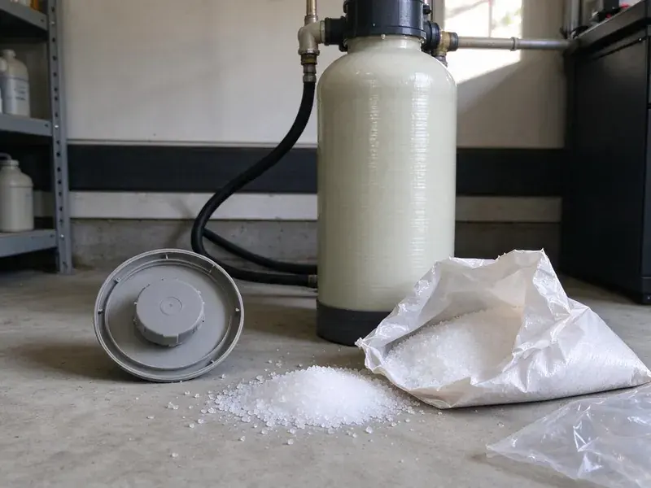

Water Heater Maintenance in Hawaiian Paradise Park, HI
Protect your investment and extend the lifespan of your water heater in Hawaiian Paradise Park, HI with expert maintenance from HKL Plumbing.
- Licensed, experienced technicians
- All Major Brands Serviced
- Guaranteed Workmanship
- Fast, reliable service

Flush Out Sediment and Add Years to Your Water Heater in Hawaiian Paradise Park, HI.
Book your maintenance appointment now and keep your hot water flowing smoothly.
Skilled Water Heater Maintenance in Hawaiian Paradise Park, HI
With HKL Plumbing, you get more than a quick check. We perform detailed diagnostics and preventative care for all types of water heaters. Our proactive approach helps Hawaiian Paradise Park, HI homeowners avoid inconvenient cold showers and extend the life of their water heating systems.
Our expertise includes:
- Testing pressure relief valves
- Inspecting anode rods
- Pressure relief valve testing and replacement.

Additional Plumbing Maintenance Services in Hawaiian Paradise Park, HI
Our maintenance and specialty plumbing services in Hawaiian Paradise Park, HI protect your home year-round and extend the life of every system.


Customers
Why Choose HKL Plumbing for Water Heater Maintenance in Hawaiian Paradise Park, HI?
Ignoring routine maintenance can lead to premature system failure and higher operating costs. By investing in professional care, you keep your water heater running safely and efficiently for many years.
- Warranty Support, Regular service records help keep manufacturer warranties valid.
- Sediment Removal, We flush out the mineral buildup that causes rumbling, lukewarm water and premature failure.
- Extend Lifespan, Proper maintenance can greatly extend the working life of your water heater, delaying the need for an expensive replacement.
Citywide Coverage
HKL Plumbing provides broad water heater maintenance coverage across every neighborhood of Hawaiian Paradise Park. Whether you're in an older district or a newer subdivision, our plumbers are equipped to reach you promptly.
Experienced Team
Our plumbing team at HKL Plumbing is highly experienced with all makes and models of water heaters, from traditional tanks to tankless systems. We understand the challenges that water hardness and changing temperatures in Hawaii can pose.
Safety-First Approach
Safety comes first in all our water heater maintenance services. We follow local Hawaii plumbing codes and industry best practices so your system runs safely and efficiently, protecting your home and family.
Trusted Certified Hawaiian Paradise Park Plumbing Services Professionals
At HKL Plumbing, we take pride in providing licensed, certified plumbing services throughout Hawaiian Paradise Park, HI. Backed by recognized industry credentials, our experienced plumbers combine technical skill with genuine customer care. Whether it is repair, installation, or maintenance, we follow strict safety and quality standards to deliver lasting results you can trust.
Call Us Now PHCC Plumbing Contractor Recognition
PHCC Plumbing Contractor Recognition Better Business Bureau (BBB) Accreditation
Better Business Bureau (BBB) Accreditation Angi Certified Pro
Angi Certified Pro ISO 9001 Quality Management Certification
ISO 9001 Quality Management CertificationComplete Water Heater Maintenance Services in Hawaiian Paradise Park, HI
T&P Valve and Safety Testing in Hawaiian Paradise Park, HI
The temperature and pressure relief valve keeps your water heater from building unsafe pressure. We test it by lifting the lever and checking that it opens and reseats. A valve that leaks or will not open gets replaced. We also check that the discharge pipe runs to an approved location. Expansion tanks are checked for proper air charge if you have one.

Water Heater Anode Rod Inspection in Hawaiian Paradise Park
The anode rod is a sacrificial part that protects your water heater tank from corrosion. During maintenance in Hawaiian Paradise Park, we inspect the condition of the anode rod and recommend replacement if it's significantly depleted. Replacing a worn anode rod can extend the life of your water heater by several years, preventing costly tank leaks.
Commercial Water Heater Maintenance in Hawaiian Paradise Park
Businesses in Hawaiian Paradise Park rely on consistent hot water, and our commercial water heater maintenance services are designed to meet those demands. We service larger capacity tanks and multiple unit setups with minimal disruption to your operations. Our technicians are experienced with commercial-grade systems and can schedule maintenance during off-peak hours to suit your business.
Electric Water Heater Element Service in Hawaiian Paradise Park, HI
Electric water heaters use upper and lower heating elements controlled by thermostats. Sediment can coat the lower element and cause it to fail. We test both elements and thermostats with the power off and replace parts as necessary. A failed element is often the reason for lukewarm water or running out of hot water fast. Proper testing avoids replacing parts that are still good.
Thermostat and Heating Element Checks in Hawaiian Paradise Park
For electric water heaters, we test the thermostat and heating elements to make sure they work correctly and hold an accurate temperature. Faulty elements or thermostats can lead to too little hot water or wasted energy use. For gas water heaters, we inspect the burner assembly and pilot light. Salt air and year-round humidity are the biggest stress on plumbing in Hawaii, corroding exposed copper, fittings, and outdoor fixtures faster than inland climates. Properly working components are vital for both efficiency and safety.
Electric Water Heater Tune-Up in Hawaiian Paradise Park
For electric water heaters, our maintenance service focuses on checking heating elements, thermostats, and electrical connections. We confirm proper wiring and test for any short circuits or power problems that could affect performance. Sediment flushing is also performed, just like with gas models, to prevent buildup and protect the lower heating element from burning out early in Hawaiian Paradise Park.
Emergency Water Heater Inspection in Hawaiian Paradise Park, HI
If your water heater is acting up and you're unsure why, our emergency inspection service in Hawaiian Paradise Park, HI can diagnose the problem fast. While not a full maintenance visit, we can identify issues like strange noises, sudden temperature drops, or leaks that point to an immediate need for repair. We'll then provide an straight assessment and options for repair or replacement.

Gas Water Heater Burner and Venting Check in Hawaiian Paradise Park
Gas water heaters need a clean burner and a proper vent to run safely. We inspect the burner flame, clean the combustion chamber and check the thermocouple or flame sensor. The vent is checked for proper draft and secure connections. Blocked or loose vents can let carbon monoxide into your home. We also check the gas line and shutoff valve for any leaks.
Water Heater Maintenance Near Me in Hawaiian Paradise Park, HI
We understand the plumbing needs of homes in Hawaiian Paradise Park, from hard water issues to aging infrastructure, and tailor our water heater maintenance to those local challenges. Don't search endlessly for 'plumbers near me', call HKL Plumbing for proven local expertise.
Our local team services water heaters in Hawaiian Paradise Park every day. We know the brands and installation styles common in area homes, from garage tanks to attic units and wall-mounted tankless heaters. Most maintenance visits take about an hour.
HKL Plumbing at a Glance
- Licensed and insured plumbers serving Hawaiian Paradise Park, HI
- Same-day appointments and 24/7 emergency response
- Clear written estimates, no hidden fees
- 4.8-star rated by 529+ Hawaii customers
Hawaiian Paradise Park Map
Hawaiian Paradise Park Information
- Population
- 14,957
- Area codes
- Local
- Service area
- Hawaiian Paradise Park and communities within 40 miles
- Nearby
- Hilo, Kaiminani, Kihei, Kahului
Regular water heater maintenance is especially valuable for homes in Hawaiian Paradise Park, HI, where water hardness and seasonal temperature swings can accelerate wear on your hot water system. Salt air and year-round humidity are the biggest stress on plumbing in Hawaii, eating away at exposed copper, fittings, and outdoor fixtures faster than inland climates.
Expert Services
Trust our professionals for reliable HKL Plumbing solutions in Hawaiian Paradise Park, HI.
Our Specialized Plumbing Services in Hawaiian Paradise Park, HI
At HKL Plumbing, we provide a complete range of plumbing services across Hawaiian Paradise Park, HI. From leak detection to full system installations, our team ensures fast, precise, and affordable service for both residential and commercial properties. Explore our core services below:


How Our Water Heater Maintenance Process Works in Hawaiian Paradise Park, HI
Our water heater maintenance is efficient, thorough and done with care for your home.
Request a Quote
Call us at (808) 649-6718 or fill out our online form to schedule your water heater maintenance. We'll discuss your needs and provide transparent pricing upfront.
On-Site Inspection
Our technician arrives on time, performs a detailed inspection of your water heater, and identifies any potential issues or areas needing attention.
Comprehensive Service
We conduct a full flush, inspect critical components, and make necessary adjustments, so your water heater runs efficiently and safely.
Frequently Asked Questions About Water Heater Maintenance in Hawaiian Paradise Park
The cost of water heater maintenance in Hawaiian Paradise Park, HI typically ranges from $100 to $250, depending on the type of water heater (tank or tankless) and the extent of service required. This usually includes flushing, anode rod inspection, and safety checks. We provide upfront pricing before any work begins.
The anode rod is a metal rod inside your water heater that sacrifices itself to keep the steel tank from corroding. It attracts corrosive elements in the water. Regular inspection and replacement of a depleted anode rod are crucial for extending the lifespan of your water heater, especially where water quality varies.
HKL Plumbing stands behind all our services with a robust workmanship warranty. We make sure our maintenance is performed correctly and effectively. Specific warranty details are provided when service is complete.
Tank water heaters typically last about 8 to 12 years, and tankless units often last longer with regular descaling. Hard water can shorten life without maintenance.
No, you typically do not need a permit for routine water heater maintenance. Permits are usually required for new installations or major replacements to make sure they meet local building and plumbing codes in Hawaiian Paradise Park.
While some basic tasks like flushing a tank might seem DIY-friendly, professional maintenance is strongly recommended. Our technicians have the right tools, knowledge, and experience to perform thorough safety checks, spot potential hazards, and meet local codes, which a DIY approach might miss.
Common signs include strange noises like rumbling or popping, rusty or discolored hot water, a rotten egg smell, reduced hot water supply, or a clear drop in water pressure. If you notice any of these, it's time for a professional check.
Yes, our workmanship and any parts we install are covered by a written workmanship warranty.
What People Are Saying About Our Plumbing Experts?

Patricia H.
We had a slab leak that two other companies could not find. HKL Plumbing located it in under an hour, explained our options, and the price matched the quote to the dollar.
Slab Leak Repair · Kihei, HI
James P.
Our commercial plumbing system had a leak under the sink, and HKL Plumbing handled it professionally. The plumbers arrived quickly and restored everything without disruption to our customers.
Commercial Plumbing · Kahului, HI
Laura S.
I scheduled a water heater replacement, and the team made the process smooth and affordable. The new unit works perfectly, and they cleaned up after completing the job.
Water Heater Replacement · Kihei, HISofia M.
Two new toilets installed in one visit, no mess left behind, and the tech even adjusted a faucet he noticed was dripping. Fair pricing and really friendly.
Toilet Installation · Kahului, HI
Emily R.
I called HKL Plumbing for plumbing repair, and the technician was fast, polite, and thorough. They explained the problem clearly and fixed it the same day. I will definitely hire them again. Highly recommended!
Plumbing Repair · Hawaiian Paradise Park, HIRobert G.
The trenchless sewer replacement saved our front yard. They walked us through the camera inspection footage first so we knew exactly what we were paying for.
Sewer Line Replacement · Kihei, HI